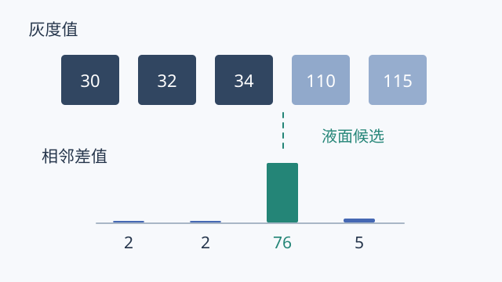

序言
人眼凭一条边就能指出液面。程序得到的却是一张像素表，瓶壁、刻度和灯光反射都可能在表里留下一条亮线。先把问题缩小到瓶中的一小块区域，判断边缘落在哪一列，会比直接搜索整张照片容易解释。
亮度变化发生在哪个方向
把图像转成灰度，或选用对液体与背景区分较好的颜色通道。想象从左往右抽取一行像素，读到 30、32、34、110、115。相邻差值依次为 2、2、76、5。第三处变化最明显，用来找边缘的线索是突变，不一定是最亮的像素。若液体更暗，突变的符号就会反过来。
在 OpenCV 中可以使用 Sobel 算子估计横向或纵向的亮度导数。它在一个小邻域里结合平滑与差分，比只减两个像素稳定。若装置让液面在画面中呈近似竖直的线，就沿 x 方向求导；若瓶子直立、液面呈水平线，则沿 y 方向。保留浮点或有符号结果后再取绝对值，可以同时看到由暗变亮和由亮变暗的边缘。直接存入无符号 8 位图像会截掉负值。
可以在纸上试一次三乘三的横向 Sobel。取三行相同的灰度 [30，30，110]，让中间行的左右差乘 2，顶行和底行各乘 1，合起来是 (110−30) × (1+2+1) = 320。把三行的顺序翻转不会改变这个竖边；把左右灰度调换，响应就成 −320。绝对值超过 255 也很正常，因为导数在这里是加权差值，不再是单个像素的亮度。


从一块区域得到一个峰
假设当前区域只包含瓶中段，并已让液面呈竖直。逐列统计各行的梯度强度，就会得到一条“列号—强度”曲线。一条横跨多行的液面边缘会让对应列的统计值升高；一个孤立的亮噪点只影响少数行。可比较均值、中位数或较高百分位数。若真正的边缘只占少数行，中位数可能把它抹掉；取最大值则又容易被坏像素支配。选取方式应跟有效边缘的长度一起考虑。
画出两个连续时刻的曲线很有帮助。把液体还没有在搜索区里形成新边界时的曲线当作背景基线，比较后来新增的响应。固定瓶壁或印刷刻度常在两条曲线的同一位置出现，差值会减弱它们。换灯光、自动曝光大幅改变或瓶身移动都会破坏背景可比性，应重新检查基线。平滑曲线时也应看原始峰宽，窗口太大会把相邻的刻度和液面合成一个峰。
什么时候应当宣布这一帧找不到
把搜索区缩成五行，比较两条竞争的竖线。候选 A 在五行里的响应为 20、21、22、23、24；候选 B 是 0、0、0、0、100。若只比峰值会挑中 B，中位数却分别是 22 和 0。若已知真实液面应覆盖大部分瓶宽，沿线支持行数是一份独立证据。视野被管口遮住一半时，要相应调整支持要求。
有些帧里背景扣除后根本没有可信的新峰。记录“未检出”和候选之间的分数差，比强行选出最大值更有意义。可以冻结同一段视频，逐帧手工标出液面位置和确实看不清的帧，分别统计可见帧上的定位误差、不可见帧上误报的次数。只在算法成功的帧上算平均误差，会悄悄漏掉最难的场景。
在原图上把误差看清楚
假设裁剪区域从全图第 240 列开始，峰在局部第 36 列，两者都从零编号，那么全图的位置是 276。调试时将这条竖线叠回原图，并同时画出搜索窗口。若图像先缩到一半再裁剪，就要按照实际处理顺序逆向恢复坐标，缩放后测到的 276 对应原图约 552。每一级都写下使用的坐标系，可以避免看似稳定的一条线总落在瓶子之外。
最后拿同一段加液录像逐帧对照原图、原始峰和经过时间滤波的输出。只要液体在动，可靠候选的位置就应随之变化；一直贴着灯带的峰多半在响应反射。如果原始峰跟得上、输出却停在刻度旁，则应检查历史窗口和锁定条件。把这三种观察留下来，比独自调整一个阈值容易判断下一步该改什么。